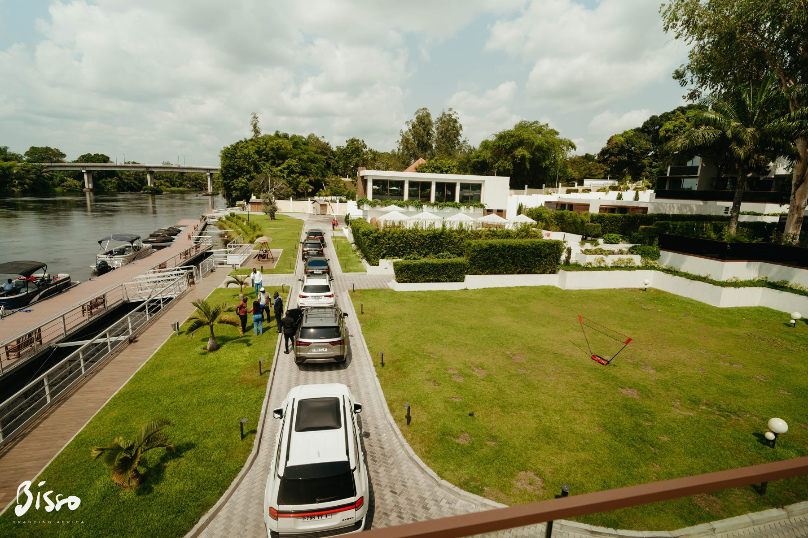

de vues Instagram sur une opération de nation branding.
branding and transforming africa
Nous écrivons les stratégies narratives qui font résonner les histoires du continent.
Bisso est une agence de communication à l’ADN africain. Nous concevons et exécutons des campagnes multicanales pour les marques, institutions et territoires qui veulent transformer leur perception, renforcer leur impact et rayonner en Afrique.

créateurs mobilisés pour porter une même histoire.
piliers pour penser une communication complète.
qui sommes-nous
Bisso fait résonner les histoires du continent et rayonner les marques en Afrique.
Nous croyons en une Afrique forte, vibrante et créative. Notre travail consiste à produire des récits puissants, ancrés dans le réel, capables de capter l’attention, de transformer la perception et de laisser une empreinte durable.
notre vision
Devenir une référence incontournable pour tout projet qui veut représenter l’Afrique sous un jour nouveau. Réinventer les récits du continent sur la scène internationale en célébrant ses succès, ses talents et sa capacité d’innovation.
notre approche
Authenticité, créativité, innovation. Nous partons du terrain, nous écrivons des stratégies lisibles, nous choisissons les bons formats et nous concevons des campagnes qui captivent, influencent et font bouger les lignes.
Découvrir l’agencece que bisso prend en main
Une même exigence stratégique sur plusieurs terrains d’action.
Marketing et communication digitale
Campagnes digitales, collaborations avec les créateurs, stratégies de contenu et storytelling.
Création de contenu et production audiovisuelle
Visuels, vidéos, documentaires, motion design, banques d’images et captation d’événements.
Nation branding et image des États africains
Stratégies narratives pour améliorer l’attractivité touristique, culturelle et économique.
Relations presse et influence médiatique
Prise de parole, amplification éditoriale, coordination presse et circulation des messages.


pourquoi nous faire confiance
Parce que Bisso ne vend pas seulement des formats. Bisso construit des déplacements de perception.
Une stratégie devient forte quand elle s’incarne dans les bons récits, les bons visages, les bons lieux et les bons formats. C’est cette articulation entre pensée, production et activation qui fait la singularité de l’agence.

Une aventure au Congo
Un récit territorial transformé en expérience et en preuve.
37 créateurs, 7 jours d’immersion, 1 600 kilomètres parcourus et une campagne conçue pour faire émerger un regard nouveau sur le Congo à travers le voyage, les lieux, les talents et l’émotion.

Académie Alima
Un lancement orchestré comme une histoire complète.
Spot TV, affichage, conférence de presse, réseaux sociaux, banque d’images et documentaire pour installer une nouvelle institution sportive dans l’espace public.
CAN 2024
Une activation pensée pour prolonger l’événement au-delà du stade.
Une écriture éditoriale et créative conçue pour faire vivre la compétition en ligne, engager les publics et transformer l’énergie d’un événement en conversation durable.
parler avec bisso